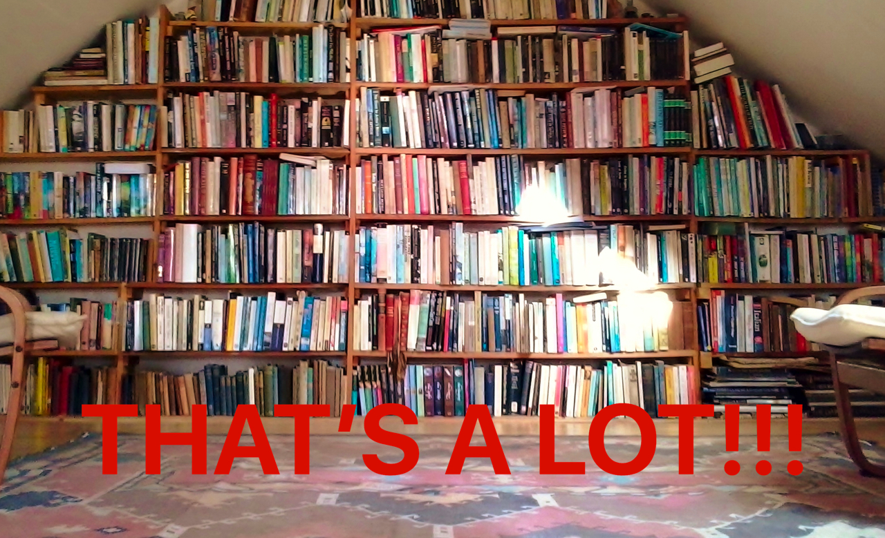
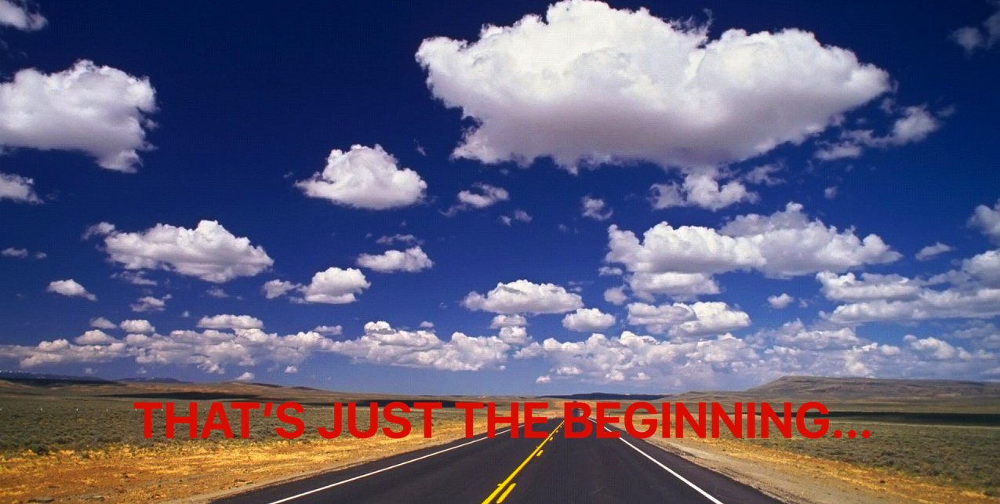

Amobee Clojure workshop: summary
Beginners - what we have learned
Persistent Data Structures: Lists, Vectors, Maps, Sets
High order functions: map, filter, partial, reduce, comp…
Lazy Sequences
Tail call recursion: loop/recur
Destructuring
Multi-arity and variadic functions
A bit of unit testing and generative testing
Polymorphism a la clojure
Introduction to macros
Please take a couple of minutes to answer
this anonymous survey
.
Feelings

Feelings

What’s next?
Clojurescript
core.async
deep dive into macros
pattern matching
Get involved in a clojure project at Amobee
Advanced - what we have learned
clojure.spec
deep dive into macros
core.async
polymorhphism
core.async
Please take a couple of minutes to answer
this anonymous survey
.
What’s next?
Take time to improve yourself
Be part of the community (Clojure is not ruby!)
unit tests are your friends
refactor
←
→
powered by
Klipse
/